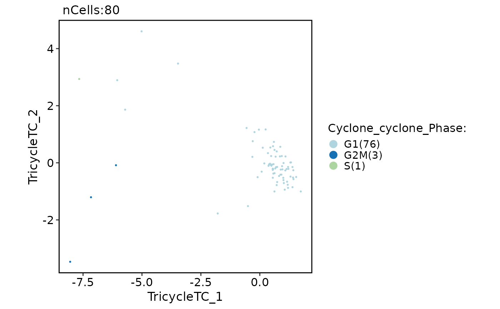

Estimate cell cycle state with Seurat gene-set scoring, scran::cyclone(),
or tricycle.
Usage
RunCellCycle(
srt,
method = c("Seurat", "cyclone", "tricycle"),
assay = NULL,
layer = "counts",
species = "Homo_sapiens",
name = "CellCycle",
phase_col = NULL,
overwrite = FALSE,
verbose = TRUE,
...
)Arguments
- srt
A Seurat object.
- method
Cell cycle estimation method. One of
"Seurat","cyclone", or"tricycle".- assay
Which assay to use. If
NULL, the default assay of the Seurat object will be used. When the object also containsChromatinAssay, the default assay and additionalChromatinAssaywill be preprocessed sequentially.- layer
Data layer used by
cycloneandtricycle. Default is"counts".- species
Latin names for animals, i.e.,
"Homo_sapiens","Mus_musculus"- name
Prefix for metadata columns and tricycle reduction names. Default is
"CellCycle".- phase_col
Optional metadata column used to store the final phase call, for example
"Phase". Default isNULL, which avoids writing a compatibility phase column.- overwrite
Whether to overwrite existing output columns. Default is
FALSE.- verbose
Whether to print the message. Default is
TRUE.- ...
Additional arguments passed to the selected method.
Examples
data(pancreas_sub)
srt <- pancreas_sub[, 1:80]
if (requireNamespace("scran", quietly = TRUE)) {
srt <- RunCellCycle(
srt,
method = "cyclone",
species = "Mus_musculus",
name = "Cyclone"
)
}
#> ℹ [2026-05-25 10:29:22] Start cell cycle scoring
#> 'select()' returned 1:many mapping between keys and columns
#> ℹ [2026-05-25 10:29:22] Map input feature names to ENSEMBL IDs with org.Mm.eg.db for scran::cyclone
#> ✔ [2026-05-25 10:29:31] Cell cycle scoring completed
if (requireNamespace("tricycle", quietly = TRUE)) {
srt <- RunCellCycle(
srt,
method = "tricycle",
species = "Mus_musculus",
name = "Tricycle"
)
if ("Cyclone_cyclone_Phase" %in% colnames(srt@meta.data)) {
CellDimPlot(
srt,
reduction = "Tricycle_tricycleEmbedding",
group.by = "Cyclone_cyclone_Phase"
)
}
FeatureDimPlot(
srt,
reduction = "Tricycle_tricycleEmbedding",
features = "Tricycle_tricyclePosition"
)
}
#> ℹ [2026-05-25 10:29:31] Start cell cycle scoring
#> Warning: Layer ‘data’ is empty
#> Warning: Layer ‘scale.data’ is empty
#> Warning: 'librarySizeFactors' is deprecated.
#> Use 'scrapper::centerSizeFactors' instead.
#> See help("Deprecated")
#> Warning: 'normalizeCounts' is deprecated.
#> Use 'scrapper::normalizeCounts' instead.
#> See help("Deprecated")
#> No custom reference projection matrix provided. The ref learned from mouse Neuroshpere data will be used.
#> The number of projection genes found in the new data is 485.
#> ✔ [2026-05-25 10:29:57] Cell cycle scoring completed
